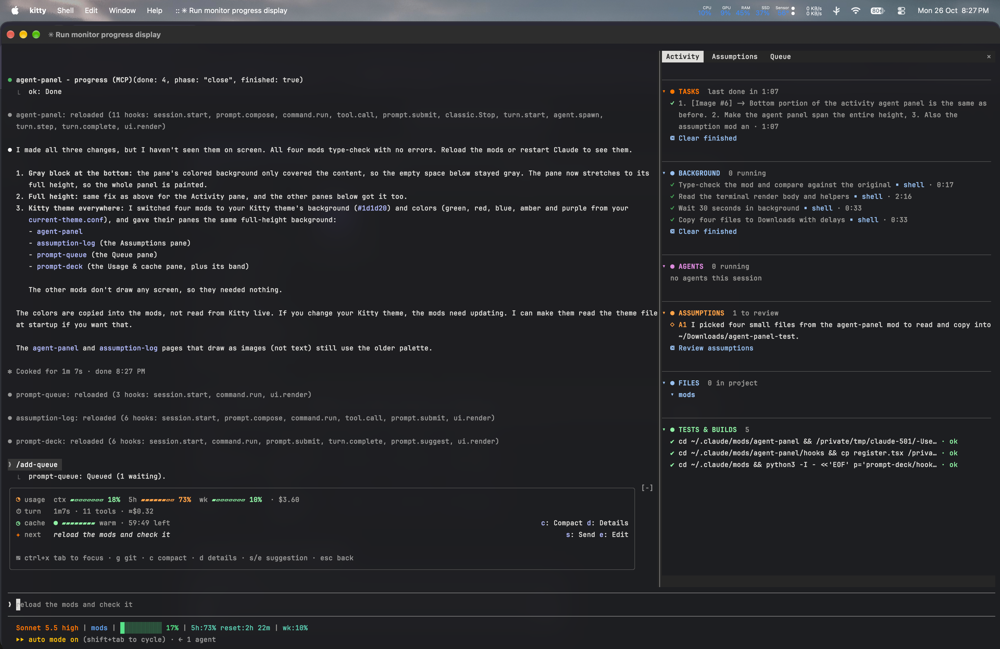
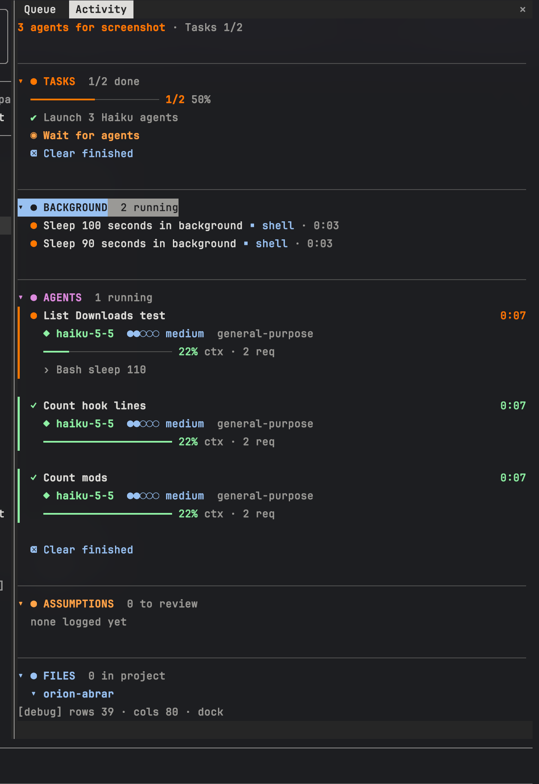
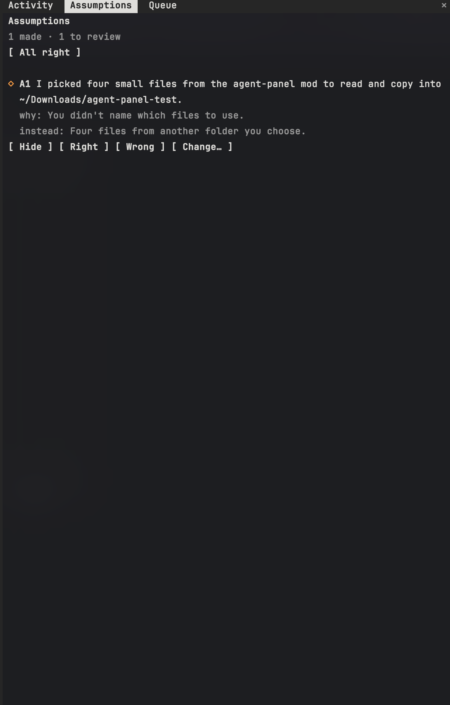
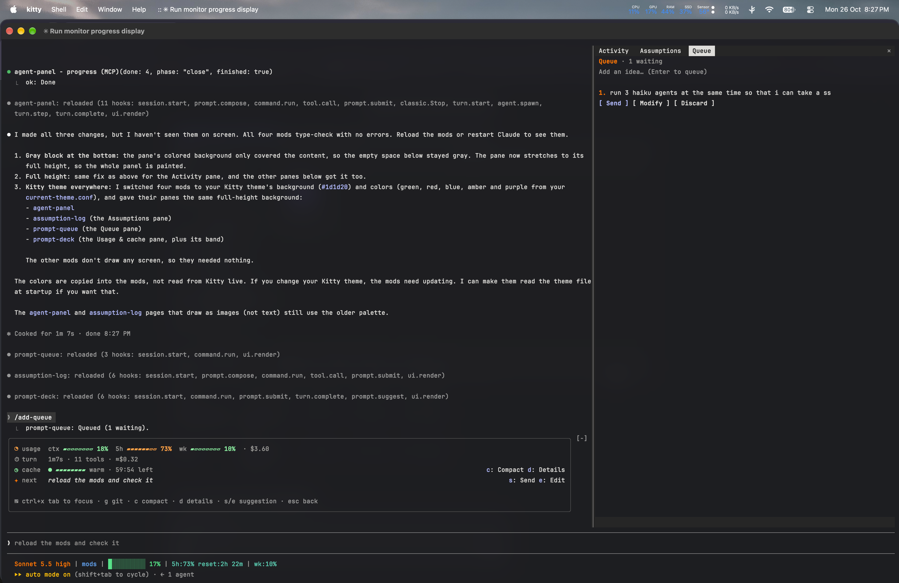
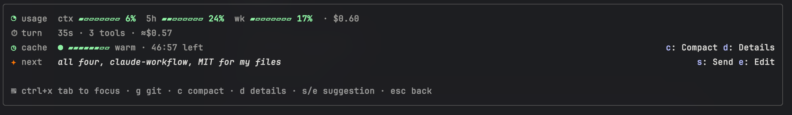
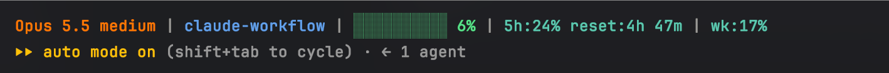

How to copy Abrar118's Claude Code setup exactly · github.com/Abrar118/claude-workflow

| Part | What it is |
|---|---|
| 12 mods | Claude Code plugins that add panes, bands, reminders and guards. Built by me. |
| verify-outside-feedback | A skill that checks pasted feedback claim by claim. Built by me. |
| Status line | Two-line status bar: a shell script for macOS/Linux, a PowerShell script for Windows. |
| CLAUDE.md | My global instructions for Claude. |
| Third-party plugins | superpowers, frontend-design, ui-ux-pro-max, impeccable and others, installed from their own sources. |
git, jq (status line) and optionally gh (PR badge in the status line).#1d1d20.git clone https://github.com/Abrar118/claude-workflow.git
cd claude-workflow
./install.shThe script adds the marketplaces, installs every mod, my skill and the third-party plugins, clones Uncodixfy, copies the status line, and copies CLAUDE.md only if you don't have one yet. On Windows, run it from Git Bash; it copies the PowerShell status line instead.
Then merge these two blocks into ~/.claude/settings.json:
"statusLine": { "type": "command", "command": "sh ~/.claude/statusline-command.sh" },
"skillOverrides": { "uncodixfy": "user-invocable-only" }The second keeps Uncodixfy opt-in: it loads only when you type /uncodixfy. Restart Claude Code. Settings I also use (optional): "model": "opus", "effortLevel": "high", "tui": "fullscreen". They're all in settings.example.json.
At the Claude Code prompt, for any mod or the skill:
/plugin install <name> --marketplace Abrar118/claude-workflowAnswer y to add the marketplace, then press Enter for the user scope. From a shell: claude plugin install <name> --marketplace Abrar118/claude-workflow.
In the desktop app: click + next to the prompt box → Plugins → Add marketplace → Abrar118/claude-workflow → Add plugin.
Copy the mod folders and point Claude Code at them. Edits then reload live.
mkdir -p ~/.claude/mods && cp -R mods/* ~/.claude/mods/In ~/.claude/settings.json, list each folder, separated by : (; on Windows):
"env": {
"CLAUDE_CODE_PLUGIN_DIRS": "~/.claude/mods/agent-panel:~/.claude/mods/assumption-log:~/.claude/mods/progress-guard:~/.claude/mods/prompt-deck:~/.claude/mods/prompt-queue:~/.claude/mods/turn-meter:~/.claude/mods/limit-guard:~/.claude/mods/safety-guard:~/.claude/mods/push-preflight:~/.claude/mods/format-on-edit:~/.claude/mods/venv-auto:~/.claude/mods/debug-on-paste",
"CLAUDE_CODE_PLUGIN_DIR_WATCH": "1"
}Use one method or the other, not both, or each mod loads twice.
A side pane with tasks, background jobs, agents, assumptions and a live file tree, plus a progress bar above the prompt. Claude reports its plan through the progress tool, and subagents through step. Open it with /subagents.


Keeps agent-panel's task list honest. After every 3 tool calls without a progress update it reminds Claude to update the list (or to start one for a task of 3 or more steps), and it shows a toast when a turn ends with the list still open. Install it together with agent-panel.
Claude calls an assume tool whenever it picks something you didn't say. Open the pane with /assumptions, then mark each one right or wrong, or ask for a change. The verdict goes back to Claude.
/add-queue <idea> saves a prompt while Claude works. /queue opens the pane, where you can Send, Modify or Discard each one.

A band above the prompt showing context, 5-hour and weekly usage, cost, how long the prompt cache stays warm, the last turn's time and cost, and a suggested next prompt (s to send, e to edit). /limits opens the details. turn-meter measures each turn and prompt-deck shows it, so install both. In the config menu you can set the cache length to 60 or 5 minutes.

| Mod | What it does |
|---|---|
| safety-guard | Asks before force pushes, pushes to main, merges into main (git merge on main, gh pr merge, the GitHub merge-PR tool), rm -rf and PowerShell/cmd recursive deletes, hard resets, DROP/TRUNCATE, flyway clean and .env writes. Block is the default answer, and when it can't tell which branch a command touches, it asks. |
| limit-guard | Warns as the 5-hour limit fills up; asks before starting subagents when it's nearly used up. |
| push-preflight | Runs format:check, lint and typecheck before git push, and blocks the push if one fails. |
| format-on-edit | Runs the project's own formatter (Prettier, dart format, Spotless) after each edit, only for files inside the folder you're working in. |
| venv-auto | Activates the nearest .venv for python, py, pip, pytest and jupyter, in Bash and PowerShell. |
| debug-on-paste | Pasted error or stack trace (PowerShell errors too) → Claude debugs step by step. |
The mods work in both of Claude Code's Windows shells, Git Bash and PowerShell: safety-guard also catches Remove-Item -Recurse, rd /s, Set-Content/Out-File writes to .env and C:\ paths; push-preflight, format-on-edit and venv-auto start their tools the Windows way; agent-panel shows C:\ file trees and job output.
The panes use my Kitty theme's colors (background #1d1d20). They're constants near the top of each mod's hooks/register.tsx; edit them to match your terminal.

cp statusline/statusline-command.sh ~/.claude/On Windows, copy statusline/statusline.ps1 to %USERPROFILE%\.claude\ and use:
"statusLine": { "type": "command", "command": "powershell -NoProfile -ExecutionPolicy Bypass -File C:/Users/<you>/.claude/statusline.ps1" }It draws the same line in the same colors, without the PR badge.
Put this at ~/.claude/CLAUDE.md (or merge it into yours):
# Global Instructions
## Tools
- **Use ripgrep (`rg`) instead of `grep`** for all search operations in Bash commands. It's installed and preferred.
## Outside feedback
- When I paste a review, critique or suggestions (code, research, plans, anything), use the `verify-outside-feedback` skill: give each claim a Confirmed / Refuted / Unclear verdict with evidence before agreeing or changing anything. Never name or guess the source.
## Working Preferences
- Provide concise, focused responses. Skip non-essential context; keep examples minimal. (Override per-request when you want depth.)
- Don't spawn a subagent for work doable directly in one response. Spawn multiple subagents in one turn when fanning out across items or reading multiple files.
- Never claim things about code you haven't opened. If a specific file is referenced, read it before answering.
- Avoid over-engineering. Only make changes directly requested or clearly necessary — no unrequested features, refactors, abstractions, or defensive code for impossible cases.
- Simplest code that works: first ask if it needs to exist, then reuse what's in the codebase, then stdlib, then native platform features, then installed deps; never add a dependency for a few lines. Read and trace the problem fully before picking the small fix; fix bugs at the root, in the shared function, not per caller. Non-trivial logic leaves one small runnable check. Never simplify away validation, security, data-loss error handling or accessibility.| Plugin / skill | Install |
|---|---|
| superpowers, frontend-design, security-guidance, claude-md-management, claude-code-setup, remember, github | /plugin install <name>@claude-plugins-official |
| ui-ux-pro-max (nextlevelbuilder) | /plugin install ui-ux-pro-max --marketplace nextlevelbuilder/ui-ux-pro-max-skill |
| impeccable (pbakaus) | See github.com/pbakaus/impeccable |
| design-system (claudekit) | npm i -g ui-ux-pro-max-cli && uipro init --global |
| Uncodixfy (cyxzdev) | git clone https://github.com/cyxzdev/Uncodixfy ~/.claude/skills/uncodixfy, then the skillOverrides block from section 3 |
Also installed but used less often: feature-dev, code-review, pr-review-toolkit, code-simplifier and swift-lsp from the official marketplace. These all belong to their authors and are under their own licenses.
superpowers:brainstorming asks questions until it's clear./code-review; outside feedback goes through verify-outside-feedback.claude plugin list, then /reload-plugins or restart.CLAUDE_CODE_PLUGIN_DIRS. Remove one.jq (macOS/Linux); check the path in settings.json.claude --debug.